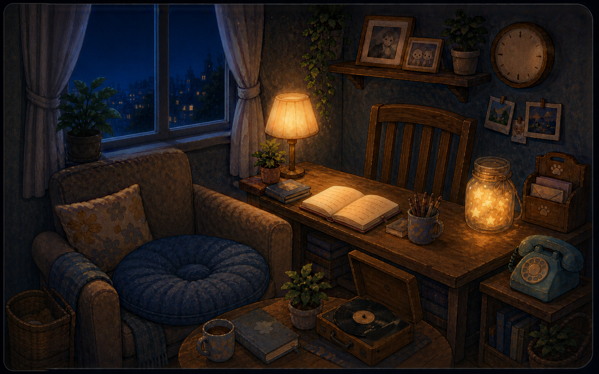
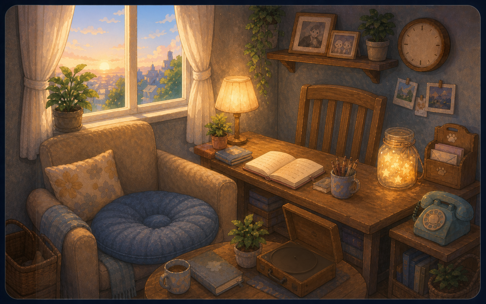

我们的日记 · v2 终稿设计稿比稿
真实
cinnaglass.css
token · 真实房间素材（夜雨）· 逐字复刻
screens.tsx
组件样式 · 舞台几何 = pixi cover-fit 同款算法 + 真实座位锚点。变体
A 终稿（384px · 纯白卡）
/
B 作者色≤6%底
/
C 长 tether
/
D 现行 504px 对照
。 修正断点 384 / 288 / 288px（504/432 实测完全盖住粉狗的脸，见 D 对照）。本页仅作设计评审，不是产品代码。

夜 · 雨
在一起
458
天
距纪念日还有 272 天
云朵上的下午
MEMORY DIARY
我们的日记
↑ 翻看更早的回忆
⭐ 今天
我
21:12
今天都很忙，但一抬头你还在。

＋2 张
sherry
21:27
我们各看各的书，也像在一起散步。
我
21:48
窗外一直下雨，我们就一起慢慢看书。
已经看到最新的回忆了 ·
记录此刻的我们…
点击书写 ✎
变体：
A 终稿 · 384px 纯白卡
B 作者色 ≤6% 淡底
C 保留长 tether
D 现行 504px 对照
标题：
我们的日记
回忆日记
（命名为用户拍板项，代码 timeline 不动）
视口：
1440×900 · 504px
960×600 · 432px
640×400 · 288px
截图模式：URL 加 &embed=1 后把窗口调到对应尺寸